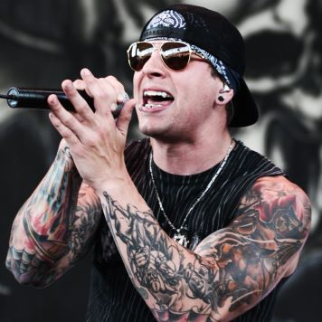
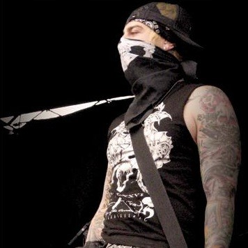
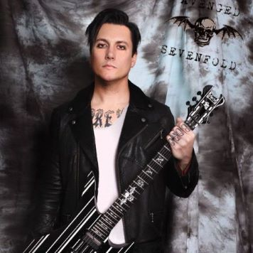
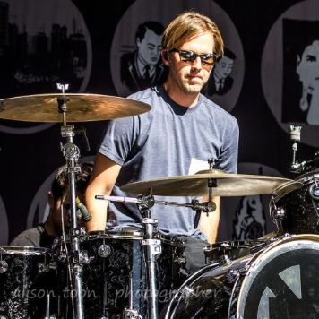
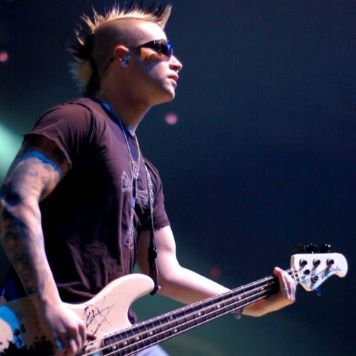

One of the founders of the band in 1999. Claims to be the edgiest man in the band, hence the name "Shadows". Has a very powerful baritone voice, which he sometimes uses in intense screaming performances, that spans on 4 octaves. Can hit a large amount of notes as well as gritty, rasp sounds.
One of the founders of the band in 1999. Ran into quite an amount of problems in high-school, which led to him taking his name "Vengeance". Has won the band multiple awards by his guitar performances with his good friend Synyster Gates. Possesses his own clothing brand.
Joined the band in 1999 quickly after its founding. Name comes from a night with his now deceased friend and former brand member Jimmy "The Rev" Sullivan, when they quote-on-quote "sinistered" a gate under the influence of alcohol. Is a formidable guitar player that earned many awards. Also possesses his own clothing brand.
Former member of Bad Religion, a punk rock band. Joined the band in 2015 as a drummer upon the departure of the former one. Has appeared in 20 different albums with 11 different bands/personalities, such as Korn. A very experienced drummer, through and through.
Long-standing friend of M.Shadows, Zacky Vengeance and The Rev (deceased). Joined the band in 2002 after the departure of the former bassist. Had already replaced a few times said bassist in the band's early tours and naturally blended within the band. Is known for his ability to play the bass extremely fast.
